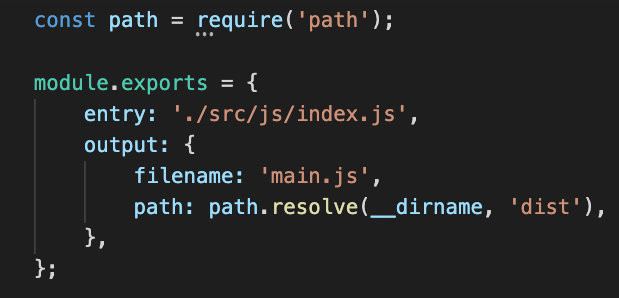
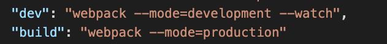
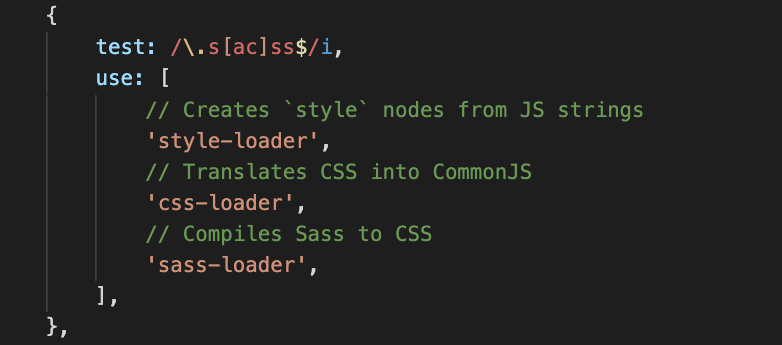

Basic Modern Build Process
Frontend Building
- Most Development falls into one of two categores:
- Messing around
- Working on an existing setup
- It's easy to go long periods of time without worrying about how things get assembled
- Projects like Create React App speed things up, but prevent us from staying connected
Concept
- New abilities/specs added to JS every year
- Different browsers are responsible for implementing the functionality
- For styling, writing CSS can be slow
- Bundling allows us to use new tools, and not have to worry* about browser support
- Ideally, we should have different build proceses
- Dev build
- Production build
*Note: You should always test production code on all browsers that or org has chosen to support.

Src: https://www.slideshare.net/ ArunMichaelDsouza/the-era-of-module-bundlers
Tools
- Most commonly NPM or Yarn for package management
- Webpack for bundling
- Babel for JS
- SCSS for CSS
Basic Build Process
- In desired directory:
npm init .
- Add Project Name
- Leave entry point empty
- Install Webpack:
npm install webpack webpack-cli --save-dev
- Create our
webpack.config.js file:

- Add our main to the html file:
- Add our basic scripts to our
package.json:

At this point, we have a basic Javascript build process. But what about the key features?
Add Babel
- Install:
npm install -D babel-loader @babel/core @babel/preset-env webpack
- Add "Rules" to Webpack

Get SASSy
- Install libraries for NPM/Webpack:
npm i style-loader css-loader sass-loader node-sass
- Update our
webpack.config.js:

- Add
import "../css/main.scss" to our index.js
Note: for full production-ready setup, css should be extracted into a main.css file.
End Result
- Package Manager
- Modern JS